data <- readRDS(
url("https://github.com/lmu-osc/synthetic-data-tutorial/raw/refs/heads/main/data/boys.RDS")
)
library(synthpop)
library(densityratio)
library(ggplot2)
syn_param <- syn(
data = data,
method = "parametric",
default.method = c("norm", "logreg", "polyreg", "polr"),
seed = 123
)
method <- syn_param$method
method["bmi"] <- "~I(wgt/(hgt/100)^2)"
visit <- c("age", "hgt", "wgt", "hc", "gen", "phb", "tv", "reg", "bmi")
syn_passive <- syn(
data = data,
method = method,
visit.sequence = visit,
seed = 123,
print = FALSE
)Evaluating privacy and utility of synthetic data
ImportantCode so far
This section builds on the previous section, and assumes you have completed all exercises. You will need the following output.
Synthetic data utility
The quality of synthetic data can be evaluated on multiple levels and in different ways. Often, three types of utility measures are distinguished (Drechsler and Haensch 2024):
- Fit-for-purpose measures are typically the first step in evaluating synthetic data utility, and evaluate for example whether variable types are consistent with the observed data and whether constraints in the observed data are reproduced in the synthetic data (i.e., non-negative quantities, deterministic relationships like between
hgt,wgtandbmi). - Global utility measures compare the observed and synthetic data on the level of the entire (multivariate) distribution. In theory, if the observed and synthetic data are drawn from the same distribution, any analysis performed on the synthetic data should yield results that are close to results obtained from the observed data. However, in practice, such global measures can be too broad, and high global utility does not guarantee that results of specific analyses are similar between observed and synthetic data.
- Outcome-specific utility measures evaluate utility for a specific analysis. In the context of synthetic data for open science, it would be helpful if results from the observed data can be approximated closely in the synthetic data. Note that specific utility really focuses on a set of analyses, but does not need to transfer to different analyses.
In isolation, none of these measures typically provide an all-encompassing qualification of utility, also because utility is use-case dependent. In many instances, the synthetic data modeller does not know what the data will be used for. In these settings, outcome-specific utility measures are only of limited help, and global utility measures might provide the broadest picture of the utility of the synthetic data. However, for open science purposes, one could argue that fit-for-purpose measures and outcome-specific utility measures are most important, because in many instances, a data user would want to reproduce the original analyses. Note, however, that even if outcome-specific utility is low, ultimately, the synthetic data can be very useful still, as it at least allows to run the original analysis code, and evaluate whether it contains any errors. In what follows, we briefly discuss all three types of measures.
Fit-for-purpose measures
We already evaluated whether the synthetic data looked plausible, and noticed that our synthetic data had some impossible negative values and fixed the relationship between hgt and wgt for the bmi variable in the synthetic data. We now go one step further, and compare the entire marginal distributions of the variables in the synthetic data with the corresponding variables in the observed data.
1. Compare descriptive statistics from syn_passive with descriptive statistics we calculated in the observed data. What do you see?
TipShow solution
summary(data) age hgt wgt bmi
Min. : 0.035 Min. : 50.0 Min. : 3.14 Min. :11.77
1st Qu.: 1.581 1st Qu.: 84.0 1st Qu.: 11.70 1st Qu.:15.89
Median :10.505 Median :145.8 Median : 34.65 Median :17.44
Mean : 9.159 Mean :131.1 Mean : 37.18 Mean :18.07
3rd Qu.:15.267 3rd Qu.:174.8 3rd Qu.: 59.58 3rd Qu.:19.50
Max. :21.177 Max. :198.0 Max. :117.40 Max. :38.64
hc gen phb tv reg
Min. :33.70 G1:281 P1:319 Min. : 1.000 north: 81
1st Qu.:48.27 G2:170 P2:119 1st Qu.: 2.000 east :161
Median :53.20 G3: 52 P3: 56 Median : 3.000 west :240
Mean :51.63 G4: 85 P4: 62 Mean : 8.471 south:193
3rd Qu.:56.00 G5:160 P5:103 3rd Qu.:15.000 city : 73
Max. :65.00 P6: 89 Max. :25.000 summary(syn_passive$syn) age hgt wgt bmi
Min. : 0.038 Min. : 45.28 Min. :-14.53 Min. :-32.13
1st Qu.: 1.595 1st Qu.: 82.89 1st Qu.: 12.06 1st Qu.: 14.73
Median :10.499 Median :138.53 Median : 40.66 Median : 19.19
Mean : 9.063 Mean :130.15 Mean : 36.59 Mean : 17.59
3rd Qu.:15.249 3rd Qu.:171.64 3rd Qu.: 58.77 3rd Qu.: 22.76
Max. :20.813 Max. :222.36 Max. : 93.29 Max. : 62.18
hc gen phb tv reg
Min. :37.27 G1:248 P1:267 Min. :-7.000 north: 90
1st Qu.:46.55 G2:168 P2:145 1st Qu.: 2.000 east :161
Median :51.43 G3: 73 P3: 60 Median : 7.000 west :225
Mean :51.46 G4:102 P4: 74 Mean : 8.591 south:197
3rd Qu.:56.49 G5:157 P5:129 3rd Qu.:15.000 city : 75
Max. :68.14 P6: 73 Max. :27.000 Most centrality measures are quite close, but the minima and maxima are often substantially off. That is, we can observe negative values for wgt, bmi, hc and tv. Moreover, some exceptionally large values occur for hgt, bmi and hc. Also, the categorical variables seem to have somewhat different counts per category in the synthetic data. This leaves quite some room for further fine-tuning of our synthesis model.
2. Use compare() from the synthpop package to compare the distributions of the observed data with the syn_passive data, set the parameters utility.stats = NULL and utility.for.plot = NULL. What do you see?
Note: We set utility.stats = NULL and utility.for.plot = NULL because here we just focus on the visualizations. We will use different utility statistics later on.
TipShow solution
compare(
syn_passive,
data,
utility.stats = NULL,
utility.for.plot = NULL,
print.flag = FALSE
)
Comparing percentages observed with synthetic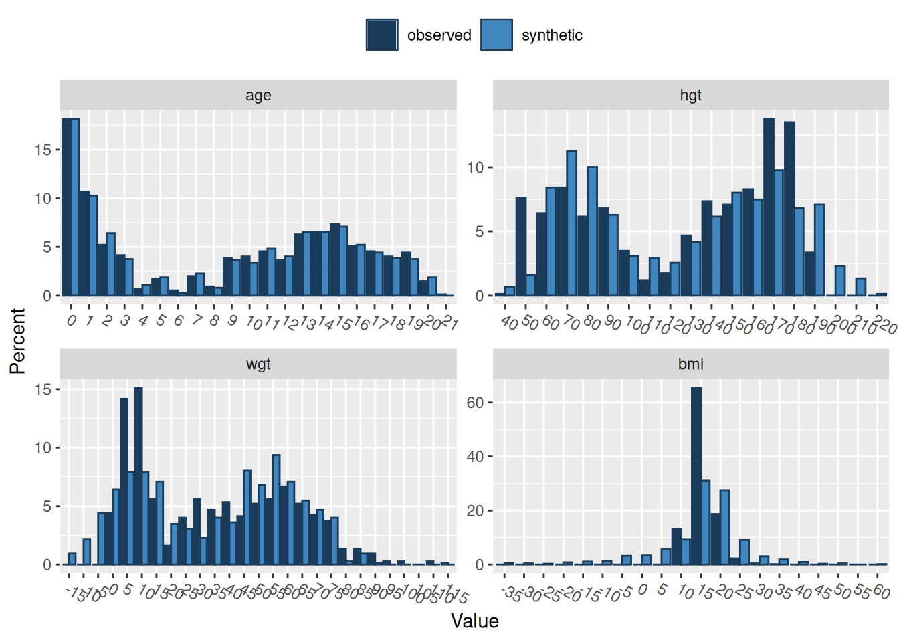
Press return for next variable(s): 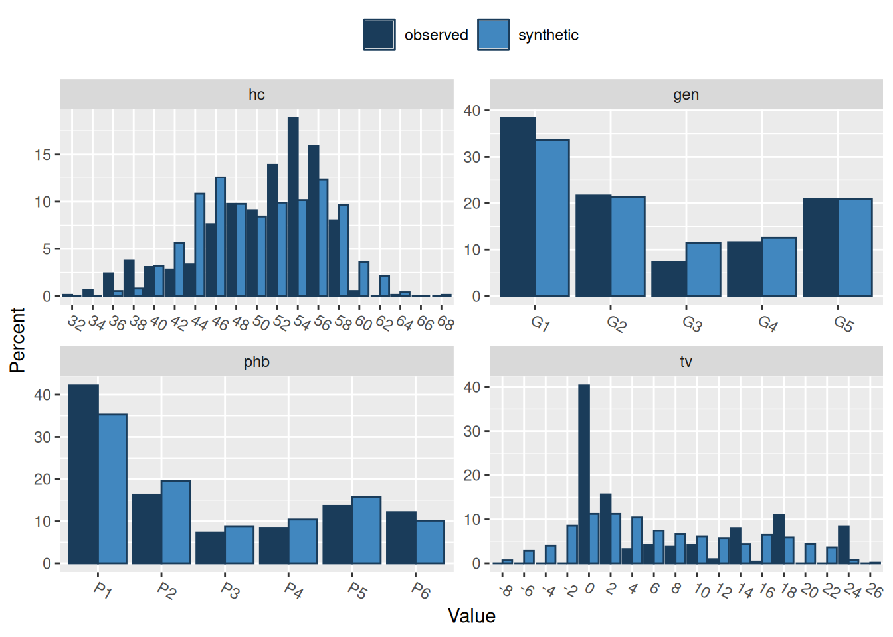
Press return for next variable(s): 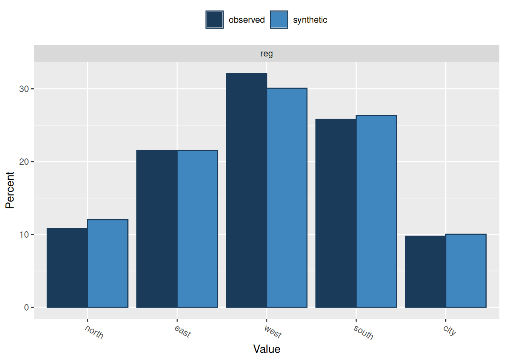
Here, we see that we really did not do a great job in preserving the marginal distributions of the variables. While for age, hgt and wgt the distributions are close to reasonable (although some problems arise in the tails), the marginal distributions of bmi, hc and tv are really off, with tails that are way too long and certain areas of the distribution that are poorly captured. All in all, this suggests that we can do substantially better still when our goal is to model the entire distribution of the observed data.
We further explore the utility of the synthetic data on a multivariate level. Since visual inspection is typically most insightful, we use the plot() function.
3. Plot the variables age, hgt, wgt, bmi, hc and tv against each other, by calling plot() on the subset of the data containing these variables. Do the same for the synthetic data.
TipShow solution
plot(
data[,c("age", "hgt", "wgt", "bmi", "hc", "tv")],
main = "Observed data"
)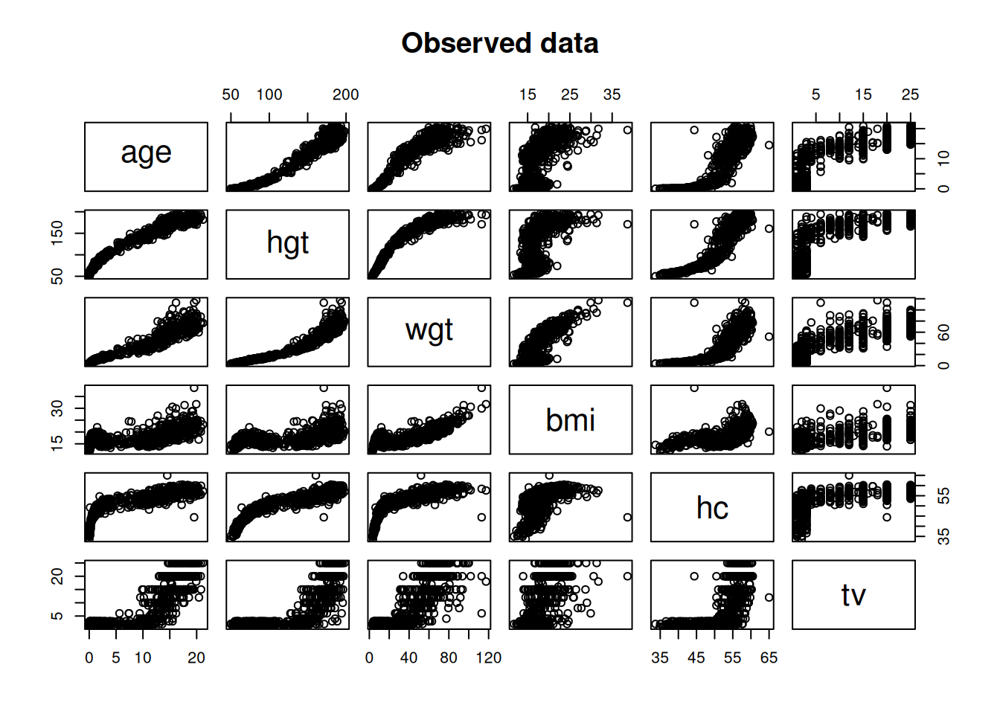
plot(
syn_passive$syn[,c("age", "hgt", "wgt", "bmi", "hc", "tv")],
main = "Synthetic data"
)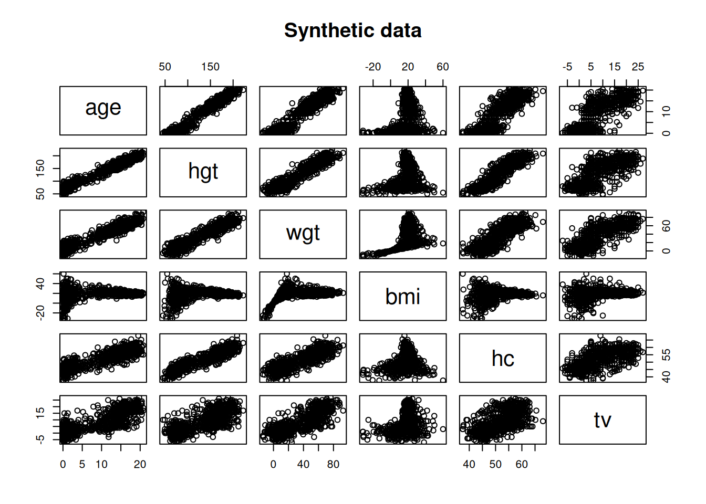
We see that the distributions of the synthetic data are much more noisy than the distributions of the observed data. Moreover, non-linear relationships are not captured, and the relationships of all variables with hc and tv really seem quite off. So, there are really some improvements that we can still make.
Now that we investigated fit-for-purpose utility, we must decide whether the synthetic data is of sufficient quality. By now, you probably suspect that this depends on the use-case at hand. You have seen that some measures of utility indicate substantial problems with the synthetic data, in the sense that certain aspects of the distribution of the data are poorly modelled. At the same time, this is not to say that the synthetic data is useless, there is already quite some information in the synthetic data and there is quite a lot that we can do with it already. We will come back to this in the section on outcome-specific utility measures. We decide that we attempt to further improve the utility of the synthetic data.
Further synthesis improvements
To improve the utility of the synthetic data, we use regression trees for the continuous variables (the "cart" model in synthpop), which is a non-parametric method that is better able to capture non-linear relationships between variables. In short, cart repetitively splits the predictor space according to which predictor is best able to predict the outcome, leading to so-called leaves in which subsets of the outcome with relatively similar values are collected (see, e.g., Section 8.1.1 in James et al. 2023). Synthetic data is then obtained by splitting the predictors of the synthetic cases according to the learned splits, after which values are sampled from the leaves. Because this approach recycles observed data, we add some smoothing, so that the observed values are not exactly reproduced in the synthetic data. This smoothing is often essential from a privacy-perspective, because it makes sure that synthetic values are not exactly equal to the observed data values.
4. Adjust the previously created method vector by replacing every instance of "norm" with "cart", and call syn() with this new method vector and smoothing = "spline".
You may again use seed = 123 to replicate our results.
TipShow solution
method[method == "norm"] <- "cart"
syn_cart <- synthpop::syn(
data,
method = method,
smoothing = "spline",
seed = 123,
print.flag = FALSE
)
Variable(s) bmi with passive synthesis: relationship does not hold in data.
Total of 723 case(s) where predictors do not give value present in data.
You might want to recompute the variable(s) in the original data.We once more get the message that the relationship for bmi does not hold in the observed data, but we ignore this again.
5. Check whether the synthetic data looks okay using the compare() function that we used previously.
TipShow solution
compare(
syn_cart,
data,
utility.stats = NULL,
utility.for.plot = NULL,
print.flag = FALSE
)
Comparing percentages observed with synthetic
Press return for next variable(s): 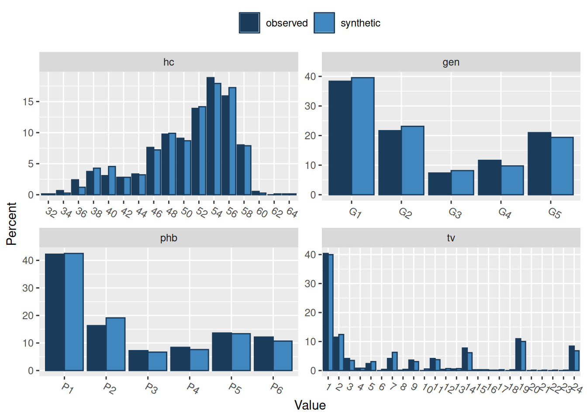
Press return for next variable(s): 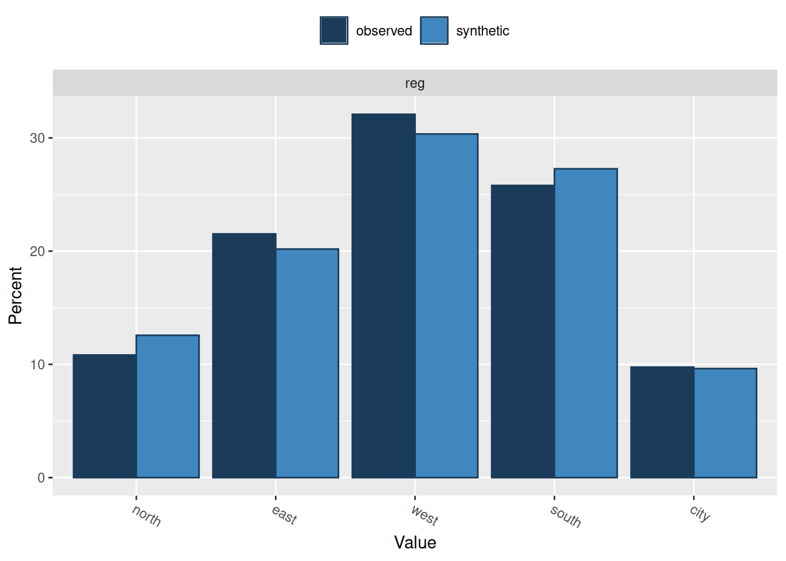
Marginally, we see that the distributions of the variables are a lot better than in our previous synthesis with norm. This looks promising.
6. Plot the variables age, hgt, wgt, bmi, hc and tv against each other, by calling plot() on syn_cart$syn.
TipShow solution
plot(
data[,c("age", "hgt", "wgt", "bmi", "hc", "tv")],
main = "Observed data"
)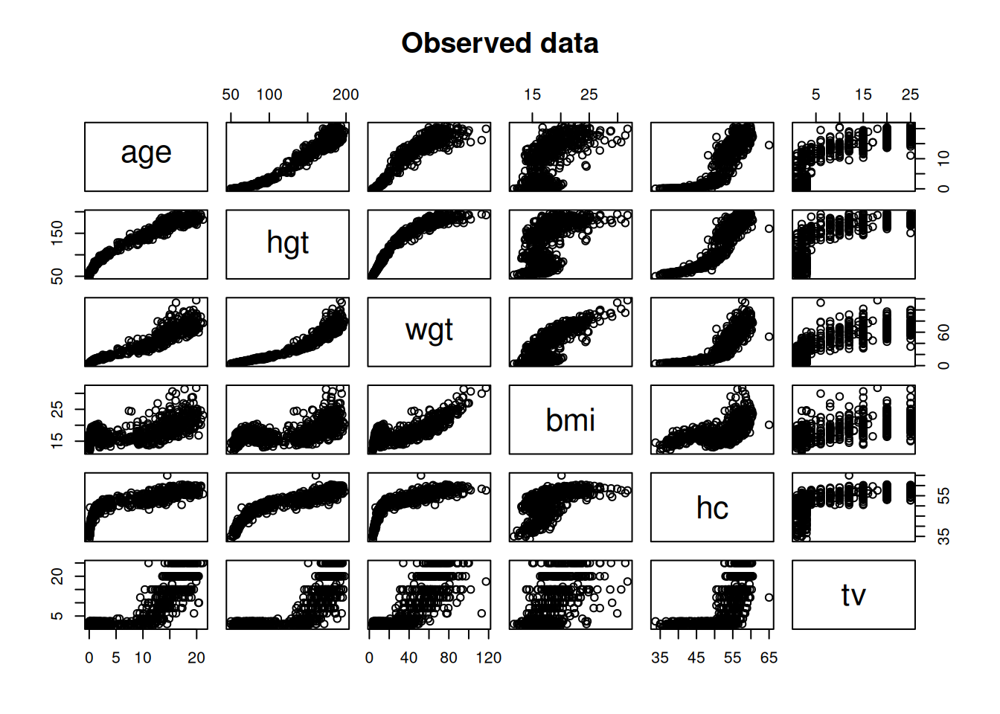
plot(
syn_cart$syn[,c("age", "hgt", "wgt", "bmi", "hc", "tv")],
main = "Synthetic data"
)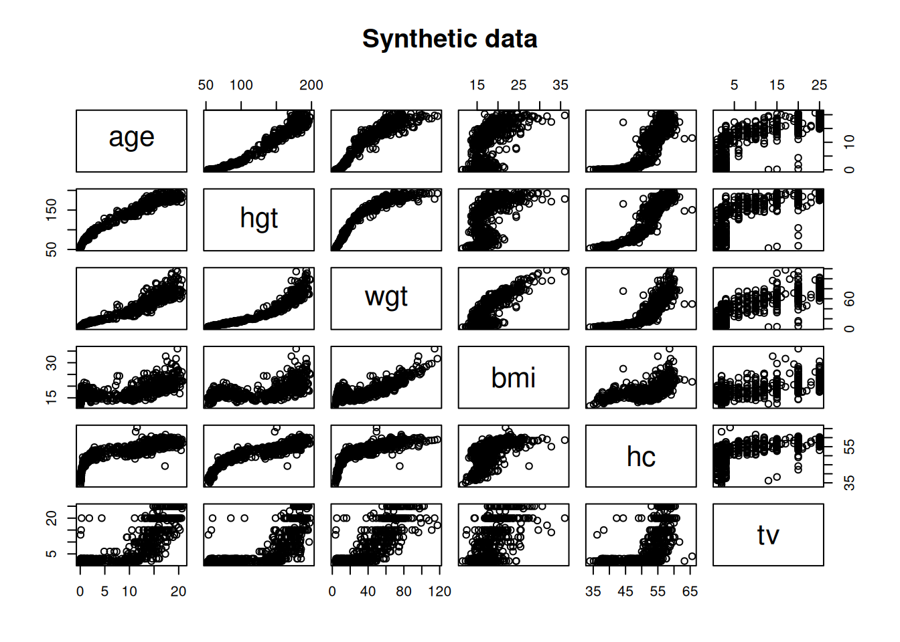
Using cart, the synthetic data looks substantially more like the observed data than the previously created synthetic data, because it is better able to reproduce non-linear relationships between variables.
We now have two synthetic data sets that seem to have different levels of utility. We will further explore this using global and outcome-specific utility measures.
Global utility measures
We evaluate global utility by comparing the distributions of the synthetic data sets with the distribution of the observed data. This is often done using one of two ways.
- The first is to compare the two distributions using some discrepancy measure. The smaller the discrepancy is, the more the synthetic data looks like the observed data.
- Another method is to train a classification model to distinguish between the observed and synthetic data, a method commonly called the propensity mean squared error (\(pMSE\); for more information about this method, see Snoke et al. 2018). The easier it is for the classifier to distinguish between the observed and synthetic data, the lower the global utility, because this implies that the observed and synthetic data are different on some aspects.
We discuss the former approach, as it performed better for evaluating synthetic data utility according to Volker, Wolf, and Kesteren (2024). Still, the \(pMSE\) is also used relatively often and can also yield insight in the global utility of a synthetic data set.
Divergence estimation through density ratio estimation
One way to evaluate global utility is by comparing the distributions of the observed and synthetic data directly. This can be done using density ratio estimation, which, like the name suggests, attempts to estimate the ratio of the densities of two groups of samples (note that we mean the same thing with distribution and density, although some nuances exist). That is, we attempt to estimate \[
r(X) = \frac{f_\text{obs}(X)}{f_\text{syn}(X)}.
\] This can be done by estimating the distributions of \(f_\text{obs}(X)\) and \(f_\text{syn}(X)\), but estimating \(r(X)\) directly typically yields better results. The R-package densityratio has been developed for this purpose (Volker, Gonzalez Poses, and van Kesteren 2024). Based on the density ratio, we can estimate various divergence measures between the two data sets, which is an in-built functionality.
7. Compare the observed and synthetic data with the ulsif() function from the densityratio package. Do this for both synthetic data sets.
Note: Set numerator_data = data and denominator_data = syn_passive$syn first, and denominator_data = syn_cart$syn second.
TipShow solution
r_passive <- ulsif(data, syn_passive$syn)
r_cart <- ulsif(data, syn_cart$syn)The ulsif() function performs cross-validation to find the optimal model to estimate the density ratio, so that typically no model specification on behalf of the user is required.
8. Call plot() on the estimated model objects. This displays the distributions of the estimated density ratio values for the observed and synthetic data.
Hint: The more these distributions overlap, the higher the similarity between the observed and synthetic data distributions.
TipShow solution
plot(r_passive)Warning: Negative estimated density ratios for 76 observation(s) converted to
0.01 before applying logarithmic transformation`stat_bin()` using `bins = 30`. Pick better value `binwidth`.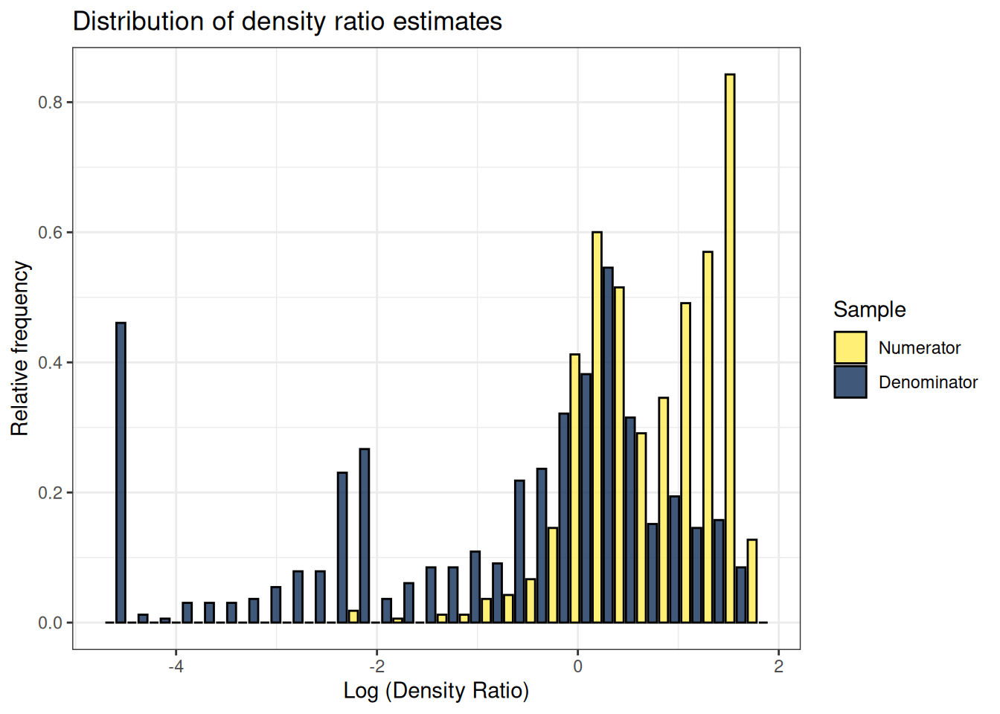
plot(r_cart)`stat_bin()` using `bins = 30`. Pick better value `binwidth`.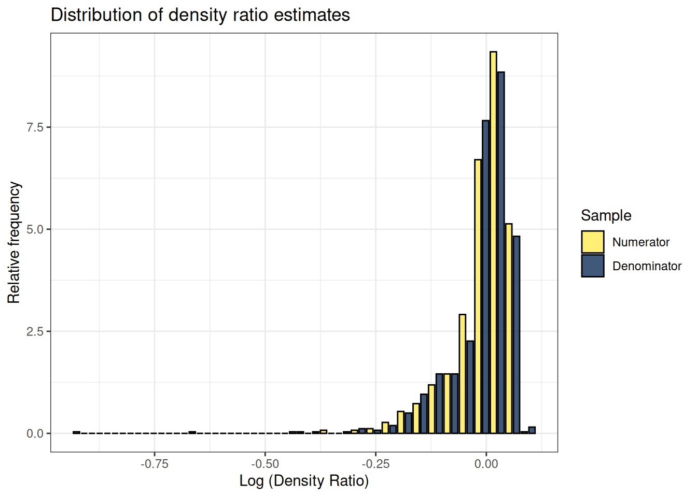
You will see that the density ratio values of the syn_passive data overlap much less with the density ratio values of the observed data than the density ratio values of the syn_cart values, indicating higher utility.
9. Call summary() on the density ratio objects to obtain the estimated Pearson divergence between the observed and synthetic data sets.
TipShow solution
summary(r_passive)
Call:
ulsif(df_numerator = data, df_denominator = syn_passive$syn)
Kernel Information:
Kernel type: Gaussian with L2 norm distances
Number of kernels: 200
Optimal sigma: 1.311197
Optimal lambda: 0.0379269
Optimal kernel weights: num [1:201] 0.1069 -0.0237 0.2505 -0.1082 0.2523 ...
Pearson divergence between P(nu) and P(de): 0.8534
For a two-sample homogeneity test, use 'summary(x, test = TRUE)'.summary(r_cart)
Call:
ulsif(df_numerator = data, df_denominator = syn_cart$syn)
Kernel Information:
Kernel type: Gaussian with L2 norm distances
Number of kernels: 200
Optimal sigma: 4.589124
Optimal lambda: 0.3359818
Optimal kernel weights: num [1:201] 0.02799 0.00165 0.01181 0.01547 0.00911 ...
Pearson divergence between P(nu) and P(de): 0.005043
For a two-sample homogeneity test, use 'summary(x, test = TRUE)'.The Pearson divergence of the syn_cart data is substantially smaller than the Pearson divergence of the syn_passive data, indicating higher global utility of the former.
Finally, we can plot the estimated density ratios against the variables in the synthetic data, to see where the synthetic data does not fit the observed data.
10. Use plot_bivariate() on the fitted density ratio models, and set grid = TRUE and samples = "denominator" to only display the synthetic data points.
Hint: Very dark blue values indicate that synthetic data points in those regions are rather scarce in the observed data, whereas dark red values indicate that in some regions, the synthetic data is underrepresented.
TipShow solution
plot_bivariate(r_passive, grid = TRUE, samples = "denominator")Warning: Negative estimated density ratios for 76 observation(s) converted to
0.01 before applying logarithmic transformation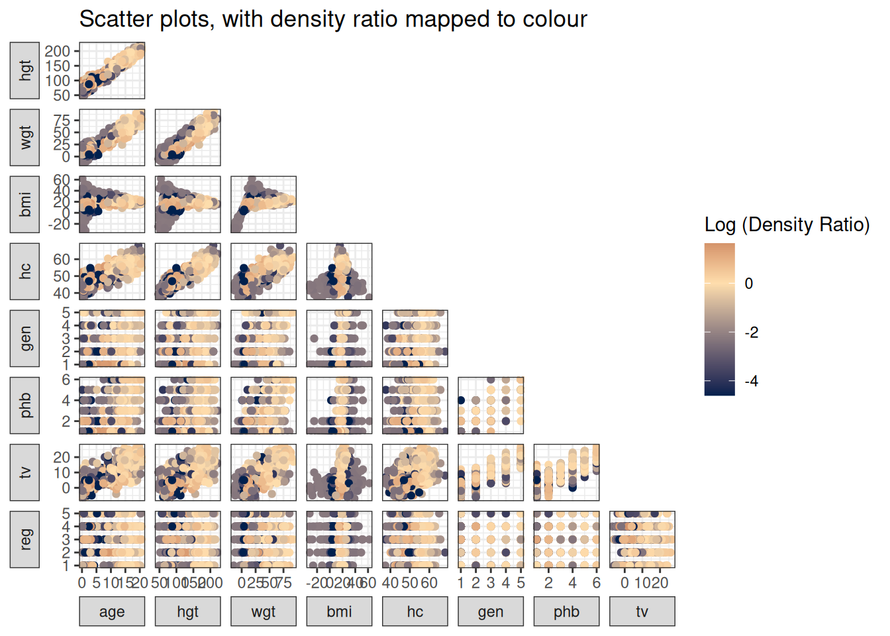
plot_bivariate(r_cart, grid = TRUE, samples = "denominator")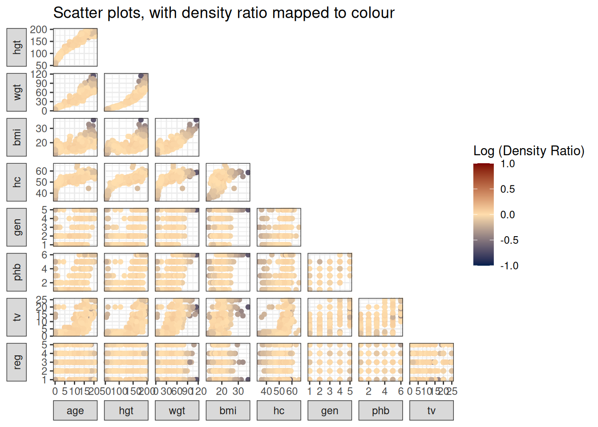
The visualizations again show that the syn_passive method yielded synthetic data in regions where it was not so much expected, and that the cart method produces synthetic data with higher utility.
Outcome-specific utility
For outcome-specific utility, we need at least one analysis that we expect data users will be interested in. For now, we assume that the data users will be interested in predicting head circumference (hc), based on age, height (hgt), weight (wgt) and region (reg). Additionally, we will fit a regression analysis where we add quadratic terms for age and hgt. High outcome-specific utility implies that the regression coefficients obtained from the synthetic data are close to the coefficients estimated from the observed data. One way to measure “closeness” in this context is via the confidence interval overlap. The confidence interval overlap quantifies to what extent the confidence intervals of the observed and synthetic coefficients overlap: \[
CIO = \frac{1}{2} \Big(
\frac{\min (U_\text{obs}, U_\text{syn}) -
\max (L_\text{obs}, L_\text{syn})}{
U_\text{obs} - L_\text{syn}
} + \frac{\min (U_\text{obs}, U_\text{syn}) -
\max (L_\text{obs}, L_\text{syn})}{
U_\text{syn} - L_\text{obs}
} \Big).
\] The terms \(U\) and \(L\) denote the upper and lower bounds of the \(95\%\) confidence intervals for the observed and synthetic data. Visually, the \(CIO\) can be depicted as follows:

The length between the dashed vertical lines is the quantity in the numerator, whereas the lengths of the two horizontal lines are in the denominators. If the two confidence intervals are almost the same, the confidence interval overlap is large, and the difference between coefficients is relatively small compared to the uncertainty around the coefficients. Conversely, if the overlap is small (or even negative), the coefficients are relatively far apart, relative to the random variation one would expect.
11. Fit a linear regression model with main effects only using lm.synds() for both synthetic data sets. Compare the results with the observed data using compare.fit.synds().
TipShow solution
fit_passive <- lm.synds(
hc ~ age + hgt + wgt + reg,
data = syn_passive
)
fit_cart <- lm.synds(
hc ~ age + hgt + wgt + reg,
data = syn_cart
)
compare.fit.synds(fit_passive, data = data)Warning: `aes_string()` was deprecated in ggplot2 3.0.0.
ℹ Please use tidy evaluation idioms with `aes()`.
ℹ See also `vignette("ggplot2-in-packages")` for more information.
ℹ The deprecated feature was likely used in the synthpop package.
Please report the issue to the authors.
Call used to fit models to the data:
lm.synds(formula = hc ~ age + hgt + wgt + reg, data = syn_passive)
Differences between results based on synthetic and observed data:
Synthetic Observed Diff Std. coef diff CI overlap
(Intercept) 30.602506217 30.66936281 -0.066856593 -0.10059117 0.9743385
age -0.596425770 -0.55595068 -0.040475086 -0.65892237 0.8319045
hgt 0.204084456 0.20210832 0.001976133 0.23287705 0.9405915
wgt -0.007259125 -0.01267189 0.005412765 0.50896602 0.8701593
regeast 0.129893022 0.15071123 -0.020818211 -0.06542263 0.9833102
regwest -0.334970650 -0.14074237 -0.194228275 -0.64717776 0.8349006
regsouth 0.068988061 0.07491878 -0.005930718 -0.01911351 0.9951240
regcity 0.243792835 0.27100778 -0.027214945 -0.07238087 0.9815352
Measures for one synthesis and 8 coefficients
Mean confidence interval overlap: 0.926483
Mean absolute std. coef diff: 0.2881814
Mahalanobis distance ratio for lack-of-fit (target 1.0): 0.27
Lack-of-fit test: 2.167614; p-value 0.9754 for test that synthesis model is
compatible with a chi-squared test with 8 degrees of freedom.
Confidence interval plot: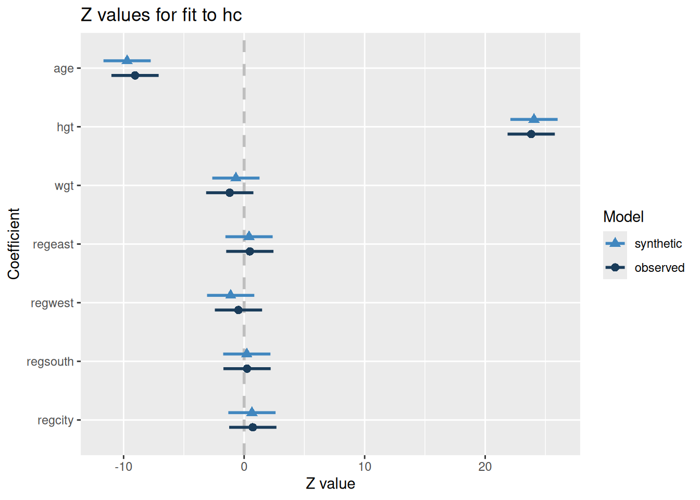
compare.fit.synds(fit_cart, data = data)
Call used to fit models to the data:
lm.synds(formula = hc ~ age + hgt + wgt + reg, data = syn_cart)
Differences between results based on synthetic and observed data:
Synthetic Observed Diff Std. coef diff CI overlap
(Intercept) 30.99127753 30.66936281 0.321914719 0.4843468 0.8764399
age -0.63890199 -0.55595068 -0.082951302 -1.3504225 0.6554981
hgt 0.19921996 0.20210832 -0.002888364 -0.3403788 0.9131671
wgt 0.01477423 -0.01267189 0.027446117 2.5807774 0.3416263
regeast 0.08083825 0.15071123 -0.069872978 -0.2195806 0.9439835
regwest -0.50173267 -0.14074237 -0.360990296 -1.2028367 0.6931483
regsouth -0.18209655 0.07491878 -0.257015324 -0.8283085 0.7886929
regcity 0.10239185 0.27100778 -0.168615934 -0.4484510 0.8855971
Measures for one synthesis and 8 coefficients
Mean confidence interval overlap: 0.7622692
Mean absolute std. coef diff: 0.9318878
Mahalanobis distance ratio for lack-of-fit (target 1.0): 1.2
Lack-of-fit test: 9.596862; p-value 0.2945 for test that synthesis model is
compatible with a chi-squared test with 8 degrees of freedom.
Confidence interval plot: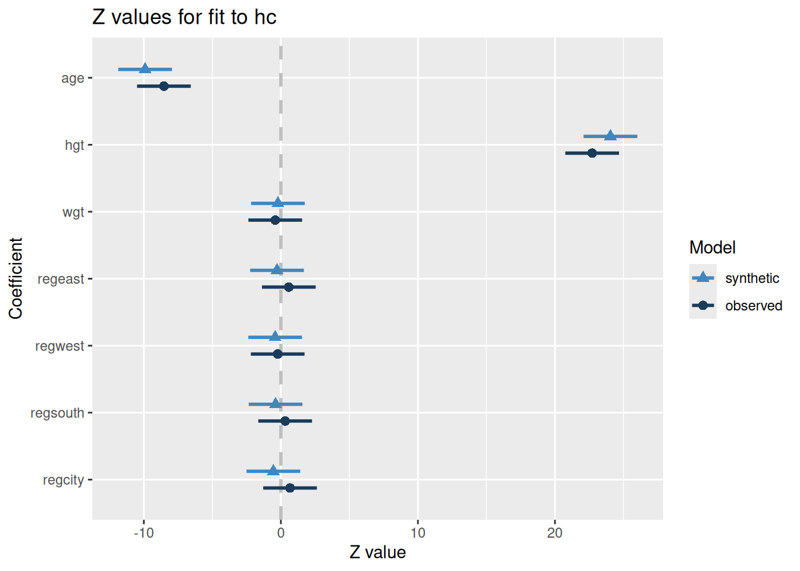
The results show that the syn_passive data yields very similar outcome-specific utility as the syn_cart data, even though previous utility measures showed much higher utility for syn_cart. The output shows both the regression coefficients in the synthetic and observed data, along with the raw and standardized difference between these coefficients and the confidence interval overlap. Further, the results show the Mahalanobis distance ratio (over the expected Mahalanobis distance between observed and synthetic data under a correct synthesis model), and the corresponding test statistic. The corresponding figure shows the confidence intervals for the observed and synthetic data coefficients. For both synthesis methods, the confidence intervals overlap substantially with those obtained in the real data, suggesting that the differences between the estimates are relatively small compared to the uncertainty around the regression coefficients (i.e., the sampling error).
This illustration has important consequences! If you expect that the synthetic data users are solely interested in analyses on main effects (i.e., regression coefficients in linear models, or mean-differences in t-tests), modelling solely these main effects appropriately is typically sufficient to obtain reasonable synthetic data. Even if the marginal (univariate) distributions are poorly captured, many standard analyses can still be conducted. Moreover, modelling every aspect of the synthetic data is thus often not required to obtain useful synthetic data. Additionally, this analysis shows that low global utility does not necessarily mean that outcome-specific utility will also be low. The reverse holds equivalently, though not in this dataset: high global utility also does not automatically render high outcome-specific utility. It is often helpful to be explicit about what the synthetic data can and cannot do, and this is easier with relatively simple synthesis models, such as the parametric models used in syn_passive [see also the section on publishing synthetic data]. More complex non-parametric models are inherently more of a black-box, and it can be surprising what comes out, even if you carefully evaluated its utility.
12. Fit a linear regression model with the above specification using lm.synds() for both synthetic data sets, but now add the quadratic effects for age and hgt. Compare the results with the observed data using compare.fit.synds().
TipShow solution
fit_passive_qd <- lm.synds(
hc ~ age + I(age^2) + hgt + I(hgt^2) + wgt + reg,
data = syn_passive
)
fit_cart_qd <- lm.synds(
hc ~ age + I(age^2) + hgt + I(hgt^2) + wgt + reg,
data = syn_cart
)
compare.fit.synds(fit_passive_qd, data = data)
Call used to fit models to the data:
lm.synds(formula = hc ~ age + I(age^2) + hgt + I(hgt^2) + wgt +
reg, data = syn_passive)
Differences between results based on synthetic and observed data:
Synthetic Observed Diff Std. coef diff CI overlap
(Intercept) 3.125143e+01 7.86589945 23.385534509 20.1754637 -4.1468965
age -4.993335e-01 -1.98876093 1.489427467 12.0109188 -2.0640662
I(age^2) -5.519209e-03 0.06293745 -0.068456663 -15.8993032 -3.0560192
hgt 1.889536e-01 0.65653667 -0.467583051 -21.8138923 -4.5648707
I(hgt^2) 6.059895e-05 -0.00175106 0.001811659 24.7376841 -5.3107497
wgt -7.706577e-03 0.04320334 -0.050909918 -4.9226741 -0.2558073
regeast 1.418255e-01 -0.07123832 0.213063801 0.8895770 0.7730629
regwest -3.127436e-01 -0.19088259 -0.121861059 -0.5400926 0.8622187
regsouth 8.098933e-02 -0.08201962 0.163008950 0.6984527 0.8218200
regcity 2.194214e-01 0.16112124 0.058300129 0.2059689 0.9474559
Measures for one synthesis and 10 coefficients
Mean confidence interval overlap: -1.599385
Mean absolute std. coef diff: 10.1894
Mahalanobis distance ratio for lack-of-fit (target 1.0): 62.58
Lack-of-fit test: 625.8325; p-value 0 for test that synthesis model is
compatible with a chi-squared test with 10 degrees of freedom.
Confidence interval plot: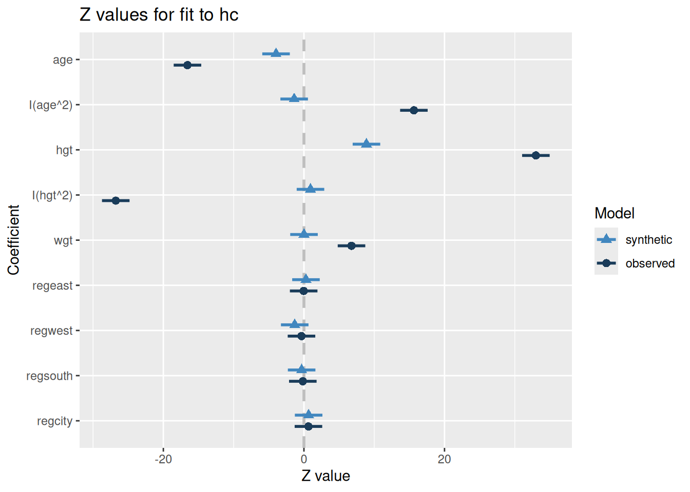
compare.fit.synds(fit_cart_qd, data = data)
Call used to fit models to the data:
lm.synds(formula = hc ~ age + I(age^2) + hgt + I(hgt^2) + wgt +
reg, data = syn_cart)
Differences between results based on synthetic and observed data:
Synthetic Observed Diff Std. coef diff CI overlap
(Intercept) 8.948799707 7.86589945 1.082900e+00 0.934253392 0.7616657
age -1.929329345 -1.98876093 5.943159e-02 0.479263338 0.8777367
I(age^2) 0.059193937 0.06293745 -3.743517e-03 -0.869445065 0.7781987
hgt 0.637150157 0.65653667 -1.938651e-02 -0.904428143 0.7692743
I(hgt^2) -0.001719818 -0.00175106 3.124157e-05 0.426594670 0.8911728
wgt 0.068116212 0.04320334 2.491287e-02 2.408920592 0.3854681
regeast -0.040789759 -0.07123832 3.044856e-02 0.127127829 0.9675688
regwest -0.627628551 -0.19088259 -4.367460e-01 -1.935673815 0.5061966
regsouth -0.120704903 -0.08201962 -3.868529e-02 -0.165756807 0.9577143
regcity 0.161698307 0.16112124 5.770689e-04 0.002038731 0.9994799
Measures for one synthesis and 10 coefficients
Mean confidence interval overlap: 0.7894476
Mean absolute std. coef diff: 0.8253502
Mahalanobis distance ratio for lack-of-fit (target 1.0): 1.87
Lack-of-fit test: 18.71478; p-value 0.044 for test that synthesis model is
compatible with a chi-squared test with 10 degrees of freedom.
Confidence interval plot: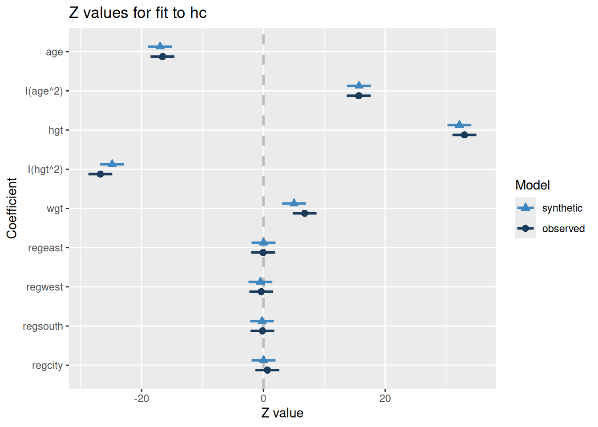
Here, we see that the coefficients of the syn_passive data are substantially off. This is no surprise, as we did not include these quadratic effects in our synthesis model. Since the variables obtained from the quadratic transformations are typically correlated with the variables on the original scale, this typically biases the regression coefficients. This is exactly how we modelled the synthetic data, and we thus knew what we could expect. The coefficients of syn_cart look much better, and have substantial confidence interval overlap with those obtained in the true data. So, in these scenarios, the syn_cart data really shows much higher utility in essentially every respect, as compared to the parametric synthesis with passive imputation.
Statistical disclosure control
Synthetic data can provide a relatively safe framework for sharing data. However, some risks will remain present, and it is important to evaluate these risks. For example, it can be the case that the synthesis models were so complex that the synthetic records are very similar or even identical to the original records, which can lead to privacy breaches.
WarningPrivacy of synthetic data
Synthetic data by itself does not provide any formal privacy guarantees. These guarantees can be incorporated, for example by using differentially private synthesis methods. Without going into the details, differential privacy starts from the point that every individual in a data set contributes some information to the parameters of a model, from which an adversary might learn something about the sampled individuals. Differential privacy bounds the influence a single observation can have on the synthesis model, and adds noise to the model parameters that is proportional to this influence. That is, if a single individual can have a large influence on the model parameters, more noise is added to protect the privacy of this single individual. For an accessible introduction to differential privacy, the blog by Desfontaines (2018) is highly recommended. Bowen and Liu (2020) reviews differentially private synthesis methods. However, these methods are not yet widely available in R. If privacy is not built-in by design, it remains important to inspect the synthetic data for potential risks. Especially if you’re not entirely sure, it is better to stay at the safe side: use relatively simple, parametric models, check for outliers, and potentially add additional noise to the synthetic data. See also Chapter 4 in the book Synthetic Data for Official Statistics.
We focus the evaluation of disclosure again on identity disclosure and attribute disclosure, as discussed in the Statistical Disclosure Control section. In short, identity disclosure implies that it is possible to identify records in the synthetic data from a set of known characteristics. Identity disclosure is not typically possible if the entire dataset is comprised of solely synthetic values, but it is still an important aspect of attribute disclosure. Attribute disclosure occurs when it is possible to infer new information from a set of known characteristics. For example, if all individuals above a certain age in some region have a given disease, one might conclude that someone satisfying these constraints also has that disease.
We evaluate identity disclosure using the replicated uniques measure, which refers to unique observations in the synthetic data that were also unique cases in the observed data (on a set of identifying variables; Raab 2024). These identifying variables must be specified by synthetic data modeller. The idea is that observations that have a unique set of identifying variables can be identified by a third party. If these identifying variables re-occur in the synthetic data, and correspond to an actual observation, a third party might conclude that a particular individual is sampled. At the same time, if the synthetic values on at least one of the non-identifying, but potentially sensitive, variables are also the same or very close to the actual values, this might allow for attribute disclosure. These replicated uniques can be removed from the synthetic data, which might not reduce the utility of the synthetic data too much.
Attribute disclosure is measured using a prediction model, and essentially asks the question whether we can correctly predict some target variable from a set of identifying variables. If this is possible in general, knowing someone’s values on a set of identifying variables allows to infer potentially sensitive information on the target variable. In synthpop, this procedure is implemented as follows (Raab 2024):
- First, we check which combinations of the identifying variables in the observed data also occur in the synthetic data.
- Subsequently, we evaluate whether the records with the same values on the identifying variables in the synthetic data also have the same values (or very similar values) on the target variable.
- Finally, we check whether this value corresponds to the actual value on the target variable in the original data. The proportion of records that meets each of these criteria is referred to as DiSCO (Disclosive in Synthetic, Correct in Original).
Both methods (replicated uniques and DiSCO) can be evaluated in synthpop using the multi.disclosure() function.
13. Call the function multi.disclosure() on the syn_passive and syn_cart data sets. Use age, hgt and reg as identifying variables (the keys argument).
TipShow solution
multi.disclosure(syn_passive, data, keys = c("age", "hgt", "reg"))------------------ 1 wgt -------------------
-------------------Synthesis 1 --------------------
Table for target wgt from GT alone with keys has 523 rows 748 colums.
Table for target wgt from GT & SD with all key combinations has 1271 rows 1496 colums.
------------------ 2 bmi -------------------
-------------------Synthesis 1 --------------------
Table for target bmi from GT alone with keys has 524 rows 748 colums.
Table for target bmi from GT & SD with all key combinations has 1272 rows 1496 colums.
------------------ 3 hc -------------------
-------------------Synthesis 1 --------------------
Table for target hc from GT alone with keys has 204 rows 748 colums.
Table for target hc from GT & SD with all key combinations has 952 rows 1496 colums.
------------------ 4 gen -------------------
-------------------Synthesis 1 --------------------
Table for target gen from GT alone with keys has 5 rows 748 colums.
Table for target gen from GT & SD with all key combinations has 5 rows 1496 colums.
------------------ 5 phb -------------------
-------------------Synthesis 1 --------------------
Table for target phb from GT alone with keys has 6 rows 748 colums.
Table for target phb from GT & SD with all key combinations has 6 rows 1496 colums.
------------------ 6 tv -------------------
-------------------Synthesis 1 --------------------
Table for target tv from GT alone with keys has 18 rows 748 colums.
Table for target tv from GT & SD with all key combinations has 35 rows 1496 colums.Disclosure risk for 748 records in the original data
Identity disclosure measures
from keys: age hgt reg
For original ( UiO ) 100 %
For synthetic ( repU ) 0 %.
Table of attribute disclosure measures for age hgt reg
Original measure is Dorig and synthetic measure is DiSCO
Variables Ordered by synthetic disclosure measure
attrib.orig attrib.syn check1 Npairs check2
1 wgt 100 0 0
2 bmi 100 0 0
3 hc 100 0 0
4 gen 100 0 0
5 phb 100 0 0
6 tv 100 0 0 
multi.disclosure(syn_cart, data, keys = c("age", "hgt", "reg"))------------------ 1 wgt -------------------
-------------------Synthesis 1 --------------------
Table for target wgt from GT alone with keys has 523 rows 748 colums.
Table for target wgt from GT & SD with all key combinations has 1271 rows 1496 colums.
------------------ 2 bmi -------------------
-------------------Synthesis 1 --------------------
Table for target bmi from GT alone with keys has 524 rows 748 colums.
Table for target bmi from GT & SD with all key combinations has 1272 rows 1496 colums.
------------------ 3 hc -------------------
-------------------Synthesis 1 --------------------
Table for target hc from GT alone with keys has 204 rows 748 colums.
Table for target hc from GT & SD with all key combinations has 952 rows 1496 colums.
------------------ 4 gen -------------------
-------------------Synthesis 1 --------------------
Table for target gen from GT alone with keys has 5 rows 748 colums.
Table for target gen from GT & SD with all key combinations has 5 rows 1496 colums.
------------------ 5 phb -------------------
-------------------Synthesis 1 --------------------
Table for target phb from GT alone with keys has 6 rows 748 colums.
Table for target phb from GT & SD with all key combinations has 6 rows 1496 colums.
------------------ 6 tv -------------------
-------------------Synthesis 1 --------------------
Table for target tv from GT alone with keys has 18 rows 748 colums.
Table for target tv from GT & SD with all key combinations has 25 rows 1496 colums.Disclosure risk for 748 records in the original data
Identity disclosure measures
from keys: age hgt reg
For original ( UiO ) 100 %
For synthetic ( repU ) 0 %.
Table of attribute disclosure measures for age hgt reg
Original measure is Dorig and synthetic measure is DiSCO
Variables Ordered by synthetic disclosure measure
attrib.orig attrib.syn check1 Npairs check2
1 wgt 100 0 0
2 bmi 100 0 0
3 hc 100 0 0
4 gen 100 0 0
5 phb 100 0 0
6 tv 100 0 0 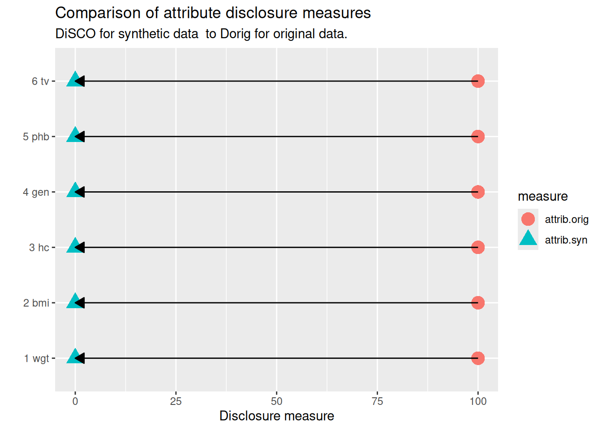
From the output, it can be seen that disclosure risk is very low for both synthesis methods, according to the criteria defined here. For both synthetic data sets, there are no replicated uniques, and the figures likewise show that the attribute disclosure risk is equal to zero for both data sets. Note that here we used a subset of the variables we deemed identifying, but this differs per data set, and should also be considered per data set. The same holds for the potentially identifying variables. For the sake of illustration, I chose age, hgt and reg, but depending on the use case, different choices might be reasonable.
After evaluating disclosure risks, it is possible to perform post-processing of the synthetic data. This procedure can be streamlined using the sdc() function in synthpop. For example, one might remove the replicated uniques from the synthetic data, using the rm.replicated.uniques argument in sdc(). Additionally, it is possible to cap outliers using the bottom.top.coding argument or to smooth variables using smooth.vars.
In our case, we already applied smoothing, and there are not really any extreme outliers present. Therefore, the sdc() function cannot do much more to further enhance our privacy protection. For the sake of illustration, we show how to apply the sdc() function below anyhow.
14. Apply the sdc() function with keys = c("age", "hgt", "reg") and set rm.replicated.uniques = TRUE and store the results in syn_passive_sdc.
Hint: This function updates the synthetic data object to remove duplicated records from the observed data (if these records were unique in the original data), make sure to release the synthetic data from the updated object if you use this function.
TipShow output
syn_passive_sdc <- sdc(
syn_passive,
data = data,
keys = c("age", "hgt", "reg"),
rm.replicated.uniques = TRUE,
)no. of replicated uniques removed: 0Conclusion
In this tutorial, you have learned to create and evaluate synthetic data. We discussed modelling deterministic relationships, refining synthesis models based on utility measures, comparing utility of synthetic data sets, and evaluating remaining disclosure risks. Remember that if you plan to release synthetic data for open science purposes, it is better to stay on the safe side with respect to privacy. When in doubt, choose the option that yields the smallest risk. We will share some advice on publishing synthetic data in the next section.
TipSummary
- Synthetic data utility can be evaluated from multiple perspectives, including fit-for-purpose utility, global distributional similarity and outcome-specific utility.
- Visual comparisons of observed and synthetic data provide an intuitive first assessment of utility, but can be complemented by additional quantitative measures.
- Simpler parametric models may produce implausible values, but can still yield decent outcome-specific utility.
- More flexible synthesis models, such as CART, can better capture non-linear relationships and improve utility for specific analyses, but typically increase disclosure risk.
- When in doubt, prioritize privacy. Synthetic data are best suited for exploratory analyses, code development and reproducibility checks, rather than definitive inference, and utility is therefore always of secondary importance only.
References
Bowen, Claire McKay, and Fang Liu. 2020. “Comparative Study of Differentially Private Data Synthesis Methods.” Statistical Science 35 (2): pp. 280–307. https://doi.org/10.1214/19-STS742.
Desfontaines, Damien. 2018. “Differential Privacy in (a Bit) More Detail.” https://desfontain.es/blog/differential-privacy-in-more-detail.html.
Drechsler, Jörg, and Anna-Carolina Haensch. 2024. “30 Years of Synthetic Data.” Statistical Science 39 (2): 221–42. https://doi.org/10.1214/24-STS927.
James, Gareth, Daniela Witten, Trevor Hastie, and Robert Tibshirani. 2023. An Introduction to Statistical Learning. 2nd ed. Springer Texts in Statistics. New York: Springer. https://doi.org/10.1007/978-1-0716-1418-1.
Raab, Gillian M. 2024. “Privacy Risk from Synthetic Data: Practical Proposals.” In Privacy in Statistical Databases, edited by Josep Domingo-Ferrer and Melek Önen, 254–73. Cham: Springer Nature Switzerland. https://doi.org/10.1007/978-3-031-69651-0_17.
Snoke, Joshua, Gillian M. Raab, Beata Nowok, Chris Dibben, and Aleksandra Slavkovic. 2018. “General and Specific Utility Measures for Synthetic Data.” Journal of the Royal Statistical Society Series A: Statistics in Society 181 (3): 663–88. https://doi.org/10.1111/rssa.12358.
Volker, Thom Benjamin, Carlos Gonzalez Poses, and Erik-Jan van Kesteren. 2024. “Densityratio: Distribution Comparison Through Density Ratio Estimation.” https://doi.org/10.5281/zenodo.13881689.
Volker, Thom Benjamin, Peter-Paul de Wolf, and Erik-Jan van Kesteren. 2024. “A Density Ratio Framework for Evaluating the Utility of Synthetic Data.” https://arxiv.org/abs/2408.13167.